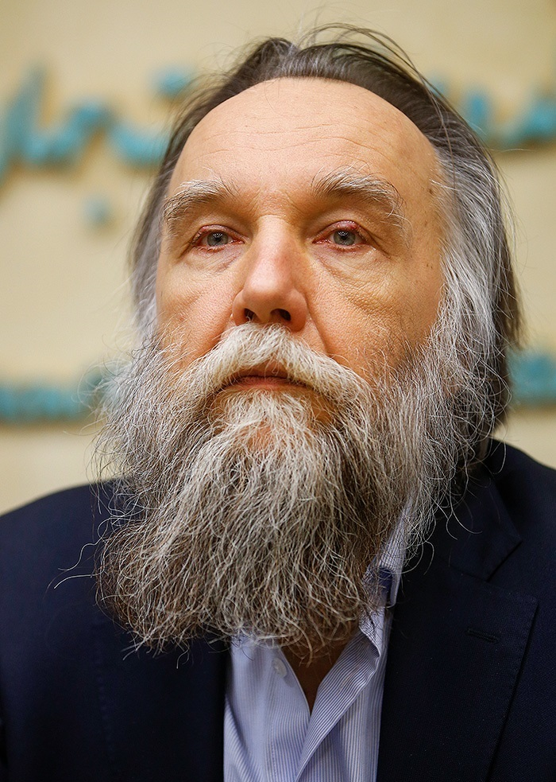

Философ. Основатель евразийства. Идеолог войны.

Александр Дугин не ведёт ток-шоу и не читает военные сводки. Он делает нечто более опасное — создаёт идеологическую основу, на которой стоит вся российская пропаганда войны. Его называют «мозгом Путина», хотя реальный масштаб его влияния на Кремль по-прежнему дискутируется.
Родился в семье военного разведчика. С юности интересовался оккультизмом, традиционализмом и правым радикализмом. В советское время участвовал в подпольных кружках, изучавших запрещённую литературу — от Юлиуса Эволы до Рене Генона.
Вместе с писателем Эдуардом Лимоновым основывает Национал-большевистскую партию — гремучую смесь крайне левой и крайне правой идеологии. Символика партии намеренно провокационна: красно-чёрный флаг с белым кругом вместо свастики. Вскоре пути Дугина и Лимонова расходятся.
Выходит главная книга Дугина — «Основы геополитики». Книга становится обязательным чтением в российских военных академиях и академии ФСБ. В ней детально описан план: дестабилизация Украины, раздел Европы, союз с Германией против атлантизма, контроль над «Хартлендом» по Маккиндеру. Многое из написанного в 1997 году стало политикой России в 2022-м.
Основывает Евразийскую партию (позже — Международное евразийское движение). Получает доступ к государственным медиа: выступает на Первом канале, «России-1», пишет колонки для государственных изданий. Евразийская идея — противопоставление «континентальной» России «морскому» Западу — проникает в официальный дискурс.
После аннексии Крыма Дугин публично призывает к вооружённому вторжению на Донбасс. В интервью украинскому телевидению заявляет: «Убивайте, убивайте, убивайте» — обращаясь к сепаратистам. Высказывание вызывает скандал; Дугин лишается должности в МГУ. США вводят персональные санкции. Факт
После начала полномасштабного вторжения Дугин становится одним из главных идеологических голосов войны. 20 августа 2022 года его дочь, журналист Дарья Дугина, погибла во взрыве автомобиля под Москвой — предположительно, в результате покушения, направленного против самого Дугина. Российские власти обвиняют Украину. Дугин использует гибель дочери для усиления риторики: «Наши сердца жаждут не просто мести, а победы».
Дугин активно строит связи с европейскими и американскими ультраправыми движениями. Его идеи о «многополярном мире» как альтернативе «западному либерализму» находят аудиторию среди части американских консерваторов и европейских националистов. Выступает на конференциях, публикуется в правых изданиях, ведёт активный Telegram-канал.
На фоне переговорного трека при Трампе Дугин занял однозначную позицию: любые территориальные уступки означают поражение «евразийской идеи». Публично критикует переговоры, призывает к продолжению войны до «окончательной победы». Его влияние на реальную политику Кремля по-прежнему остаётся неясным — но его идеи давно вышли за пределы академических дискуссий и стали языком, на котором война объясняет сама себя.
«Убивайте, убивайте, убивайте. Там нет других слов.»
«Наши сердца жаждут не просто мести. Наши сердца жаждут победы. Моя дочь отдала свою жизнь за победу.»
«Либерализм — это смерть. Он убивает народы, убивает идентичности, убивает историю. Россия — это альтернатива смерти.»
«Однополярный мир — это американская диктатура. Многополярный мир — это свобода для всех цивилизаций быть собой. Россия сражается не за себя — за всё человечество.»
Дугин создаёт интеллектуальный фасад для политики, которая иначе выглядела бы как голая агрессия. Ссылки на Хайдеггера, Юнгера, Эволу создают видимость академической серьёзности. Это делает его опасно убедительным для определённой аудитории.
«Основы геополитики» 1997 года детально описывают то, что Россия делает сейчас: дестабилизация Украины, раздел Европы, война с «атлантизмом». Это не пророчество — это программа, которая постепенно реализовывалась политическими инструментами. Интерпр.
Дугин активно строит связи с ультраправыми движениями Европы и США, продвигая идею «консервативного интернационала» против либерального Запада. Его идеи распространяются через правые медиа, конференции и академические сети.
Гибель дочери Дарьи немедленно встроена в идеологический нарратив. Частное горе публично превращается в доказательство того, что «враг реален» и «жертвы необходимы». Цинизм этой операции не становится предметом общественного обсуждения внутри России.
Все утверждения в данном досье основаны на открытых публичных источниках. Факты, отмеченные Факт, имеют прямые первичные источники. Отмеченные Интерпр. — авторская интерпретация задокументированных событий.